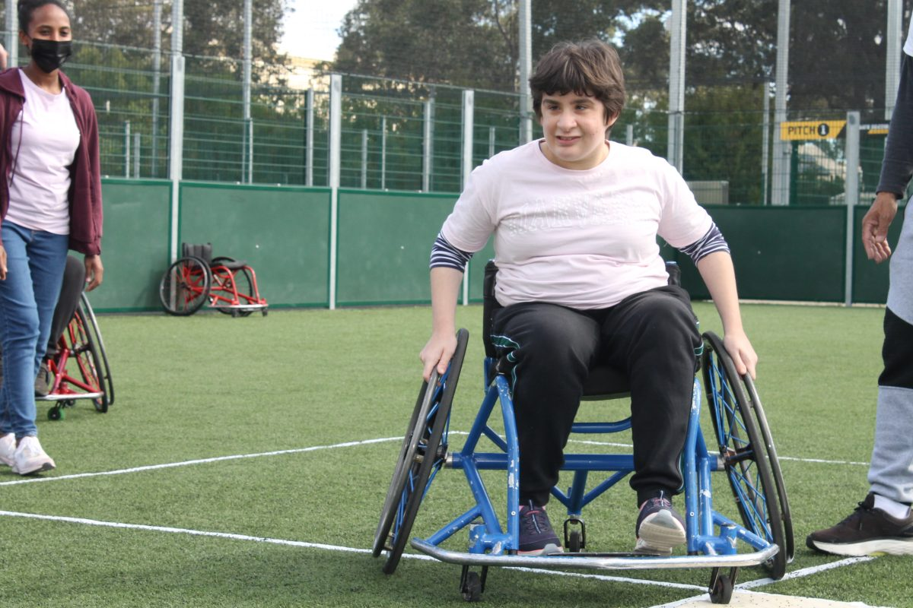

Our Services
Clarity Core Care delivers NDIS supports built around each participant's plan and goals. Explore the categories of support we offer and reach out to discuss what's right for you.
Tailored support across every NDIS category we deliver.

NDIS Supports We Provide
Five core areas of NDIS funding our team can help you access and use. We support self-managed and plan-managed participants.
Assistance with Daily Life
Supports for independence at home, including personal care, cleaning, and cooking.
Ask Us About This arrow_forwardAssistance with Social & Community Participation
Funding for participating in recreational and social activities.
Ask Us About This arrow_forwardConsumables
Funding for everyday items related to a participant's disability, such as continence aids or nutritional products.
Ask Us About This arrow_forwardTransport
Assistance for travel, allowing participants to access the community when they cannot use public transport.
Ask Us About This arrow_forwardHome and Living
Covers support for living arrangements, including SIL (Supported Independent Living).
Ask Us About This arrow_forwardFrequently Asked
How do I get started with Clarity Core Care? add
Reach out through the contact form or give us a call. A coordinator will walk you through your plan, the supports you're after, and book an initial conversation at a time that suits you.
Can I use my self-managed or plan-managed funds? add
Yes. We support self-managed and plan-managed participants across every service we deliver.
How quickly can you mobilise support? add
Most new supports can be mobilised within one to two weeks, depending on the care plan and worker matching. Urgent requests are handled case-by-case, talk to a coordinator for specifics.
Do you cover evenings and weekends? add
Yes. Supports are scheduled around the participant, not a 9-to-5. Evening, overnight, and weekend rosters are available subject to staffing and plan funding.
What if my needs change during my plan? add
Plans evolve, and so do we. Your coordinator reviews supports regularly and adjusts rosters, worker matches, or service types as your goals shift.
How do I make a complaint or give feedback? add
Contact your coordinator directly, or reach our feedback line through the contact page. We follow the NDIS Practice Standards for complaints handling, so every concern is logged, investigated, and followed up in writing.